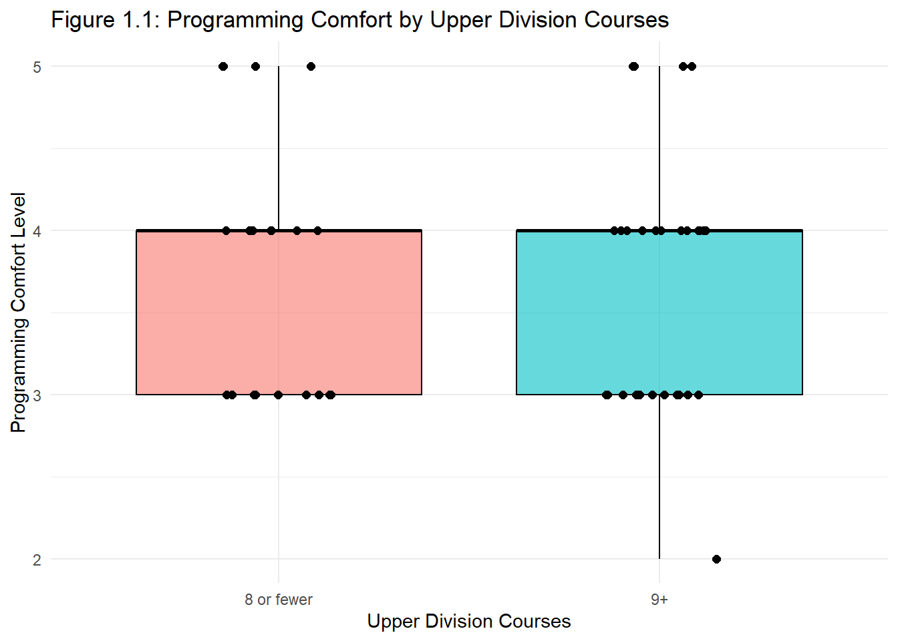
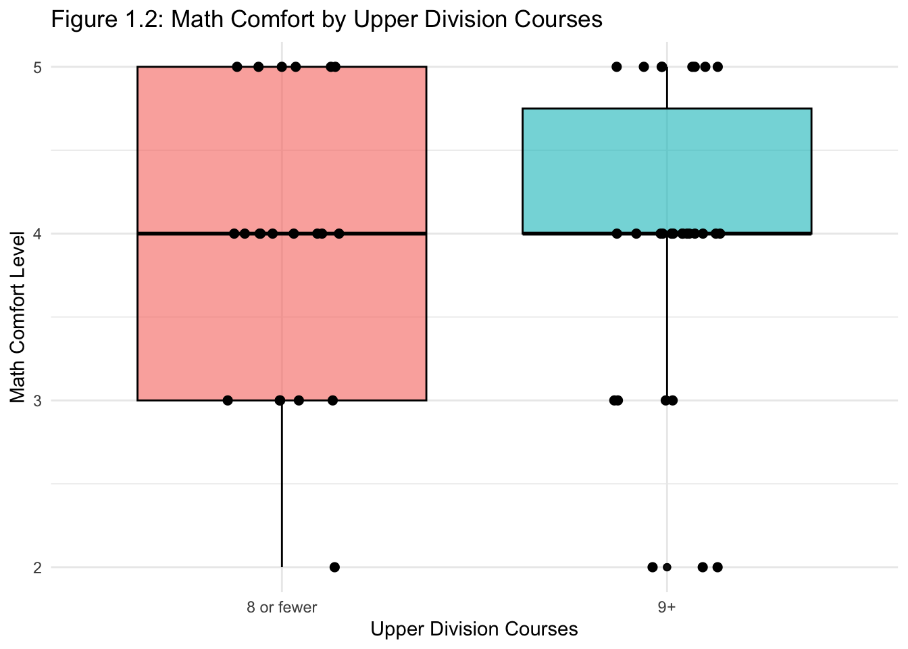
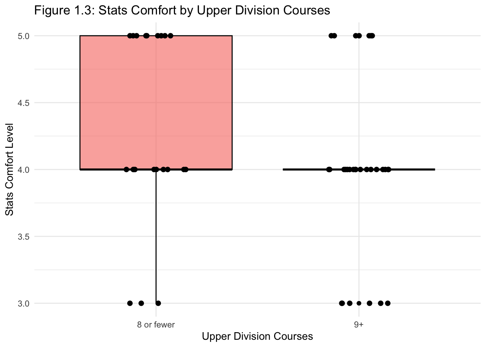
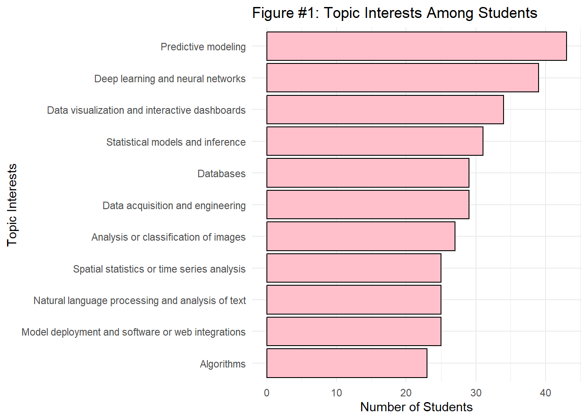
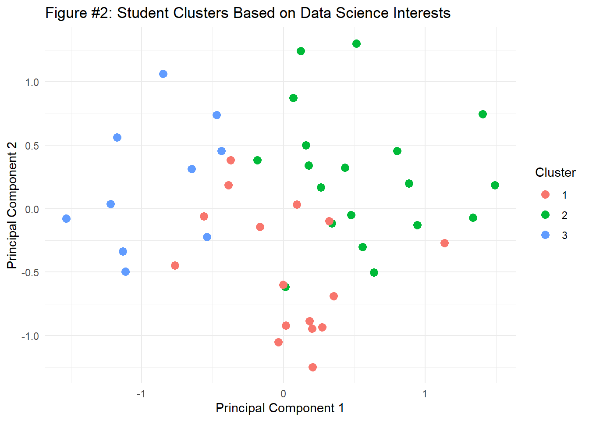
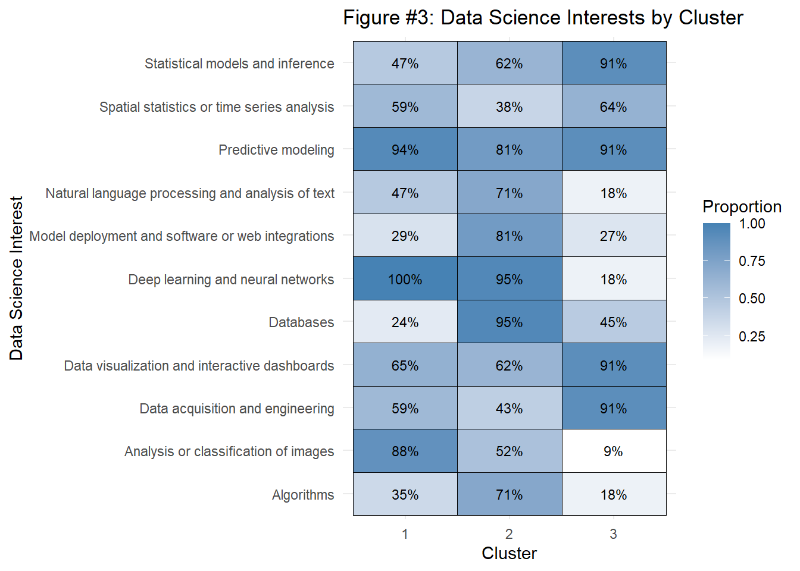
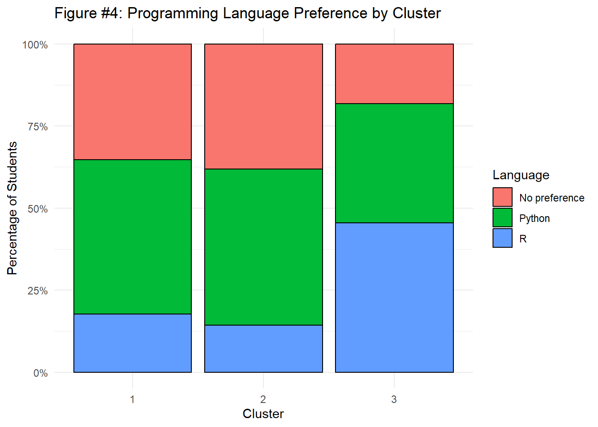

| Upper Div Courses | Programming | Math | Stats | Students |
|---|---|---|---|---|
| 8 or fewer | 3.71 | 3.95 | 4.29 | 21 |
| 9+ | 3.70 | 3.93 | 4.03 | 30 |
Team Six Analysis of class surveys
Executive summary
Write a one-paragraph abstract summarizing what you did and your findings. It need not be comprehensive; try to highlight the most important or interesting outcomes.
When looking at comfort levels and course counts, we failed to find correlation. This was also the case when considering if students with interest in Lab vs Industry positions favored either Python or R. When clustering students based on interests, the lack of distinct clusters was fairly apparent as well. The greatest obstacle in this research was the small sample size, which made rejecting null hypothesis challenging.
Data description
The data was obtained from the PSTAT197A course survey, which was sent out to students at the beginning of the 2026 fall quarter. The survey was anonymized and consisted of two parts: a background survey and an interest survey. The background survey collected information on students’ comfort levels with programming, mathematics, and statistics, as well as the number of upper division courses they had taken. The interest survey gathered data on students’ preferred areas of study within data science, their programming language preferences, and their career track orientation (Industry-only vs. Lab-inclined). Given that students were given the option to have their responses included in the analysis, the sample consisted of 51 responses for the background survey and 49 responses for the interest survey.
One important characteristic is that the sample size is small, which limits the generalizability of the findings. Additionally, the survey responses are self-reported, which may introduce bias or inaccuracies in the data. Such as with proficiency, where students may overestimate or underestimate their abilities.
The data is that it includes both categorical and discrete numerical variables. Comfort levels are measured on a 1-5 scale, while the number of upper division courses is a categorical variable with three levels (3-5, 6-8, 9+). Programming language preference is a categorical variable with three levels (Python, R, No preference), and career track orientation is a binary variable (Industry-only vs. Lab-inclined).
Questions of interest
We explored how students’ academic experiences and personal interests relate to their experiences and future goals in data science. Specifically, we investigated the connection between coursework and technical confidence, the relationship between programming preferences and career plans, and the possibility of identifying common patterns in students’ areas of interest. These questions guided our analysis:
- Is coursework preparation associated with students’ self reported comfort levels with technical skills?
- Is programming language preference associated with students’ career track orientation (industry-only vs lab-inclined)?
- Are there underlying patterns in students’ data science interests that reveal distinct groups of students?
Question #1
Findings
To answer this question, we compared students’ self-reported comfort with programming, math, and statistics (each rated 1-5) across the number of upper division courses they had taken. Only 2 students reported taking 3-5 courses, so we combined the 3-5 and 6-8 groups into a single “8 or fewer” group (21 students) and compared it to the “9+” group (30 students).
Table 1.1 shows that average comfort levels are nearly identical between the two groups for programming (3.71 vs 3.70) and math (3.95 vs 3.93). Stats comfort was slightly higher for students with 8 or fewer courses (4.29 vs 4.03), which is the opposite of what we expected.
Figure 1.1 shows that programming comfort is distributed very similarly in both groups, with most students rating themselves a 3 or 4 and a median of 4 in each group.
Figure 1.2 shows that both groups also have a median math comfort of 4. Students with 9+ courses are more concentrated around 4, while the “8 or fewer” group is more spread out between 3 and 5.
Figure 1.3 shows the gap in stats comfort: about 43% of students with 8 or fewer courses rated their stats comfort a 5, compared to about 23% of students with 9+ courses. Both groups still have a median of 4.
Table 1.2 shows that none of the Wilcoxon rank-sum tests were significant at the 0.05 level (programming p = 0.926, math p = 0.975, stats p = 0.190). We used the Wilcoxon test instead of a t-test or ANOVA because comfort is an ordinal 1-5 rating with only a few distinct values. Overall, we did not find evidence that taking more upper division courses is associated with higher comfort levels. However, most students rated their comfort between 3 and 5 and the sample was small, so small differences may be hard to detect. The course count also does not account for which courses students took.
Code chunks



| Comfort Type | p-value |
|---|---|
| Programming | 0.926 |
| Math | 0.975 |
| Stats | 0.190 |
Question #2
Findings
To answer this question, we classified students into Industry-Only (32 respondents) and Lab-Inclined (17 respondents who selected either lab or both tracks). Descriptively, language preferences show a visible split: Industry-Only students favored Python at 53.1% compared to just 15.6% for R, whereas Lab-Inclined respondents leaned toward R at 35.3% over Python at 29.4%, with “No preference” remaining nearly identical across both groups (~31% to 35%). However, formal hypothesis testing indicates this difference may be attributable to sample variation rather than a true underlying relationship. A Pearson’s Chi-Square test of independence resulted in \(X^2 = 3.359\) (\(p = 0.186\)), and a Fisher’s Exact Test—conducted because the expected count for Lab-Inclined students preferring R was under 5 (\(E = 3.82\))—yielded \(p = 0.181\). Because both \(p\)-values exceed the standard significance threshold of \(\alpha = 0.05\), we fail to reject the null hypothesis of independence and conclude there is insufficient statistical evidence of an association between career track interest and programming language preference.
Question #3
Findings
Summarize your results. Don’t try to explain every step you took; focus instead on providing the main data analytic outputs – tables and figures – and explaining clearly what they show. Clarify any important decisions you made in obtaining them. You can display codes if you like but it is not necessary.
Figure 1 shows that predictive modeling was the most popular topic of interest, selected by approximately 43 students, followed by deep learning and neural networks with 39 students. In contrast, algorithms was the least popular topic, selected by approximately 23 students. Overall, students appear most interested in applied data science and machine learning.
Figure 2 shows three clusters of students based on their data science interests. Cluster 1 (red) is associated with deep learning and image analysis, Cluster 2 (green) with databases, deep learning, and model deployment, and Cluster 3 (blue) with statistics, visualization, and data acquisition. These patterns suggest that students have different areas of interest, although some overlap exists between clusters.
Figure 3 provides a closer look at the interests distinguishing each cluster. Although predictive modeling was popular across all three clusters, statistical models, visualization, and data acquisition were especially common in Cluster 3, while deep learning and image analysis were more prominent in Cluster 1. Cluster 2 showed broader interest in technical areas, including databases, algorithms, and model deployment. These differences suggest that students share some core interests but vary in their preferred applications and technical focus.
Figure 4 shows that Python is the most preferred programming language in all three clusters, particularly Cluster 2. Cluster 3 has a substantially higher proportion of students preferring R (about 46%) compared to Clusters 1 and 2. Additionally, Clusters 1 and 2 have larger proportions of students with no language preference, suggesting that programming preferences vary somewhat across clusters but are not entirely determined by topic interests.
Figure 5 shows that industry-oriented projects are the most popular goal across all three clusters, making up approximately 65–73% of students in each group. Cluster 2 has the highest proportion of students interested in both industry and lab projects, while Cluster 1 has the largest proportion interested in lab-only projects. Overall, project goal preferences are relatively similar across clusters, suggesting that students’ data science interests do not strongly distinguish their preference in industry, lab, or both.
Code chunks



